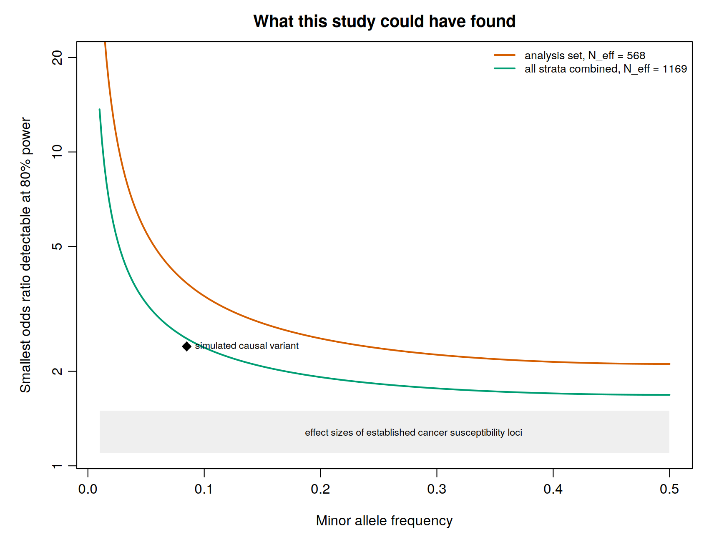
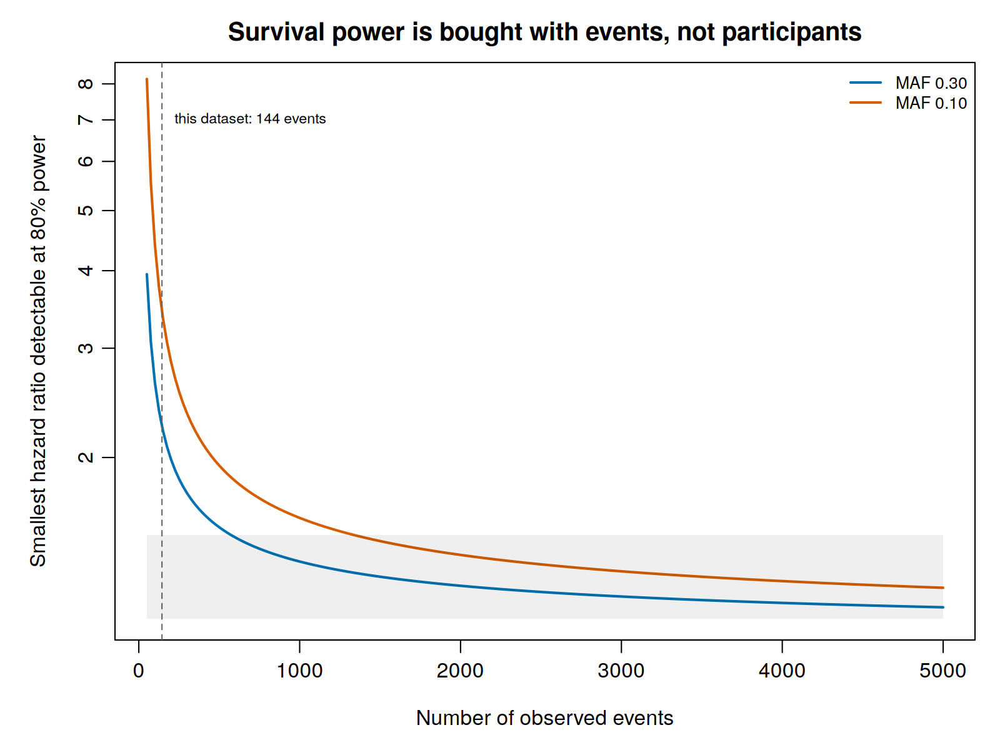

Statistical power
Power analysis has a reputation as a formality performed for a grant application and then forgotten. In a rare and complex trait it is the step that decides which of the analyses in this guide are legitimate at all, and it belongs exactly here: after the analysis set is fixed, and before any association test whose result you will be tempted to believe.
The question it answers is narrow and useful. Given the people actually in hand, how large would an effect have to be for this study to find it?
~/gwas_tutorial/
├── scripts/03B_statistical_power/
└── results/power/Finish Population stratification, which defines the analysis set. The comparison with all ancestries combined also uses Meta-analysis.
The arithmetic, in three lines
Power depends on how much information the design carries about the genetic effect, and that information is a product of three things:
\[\text{Fisher information} \;=\; N \times \pi(1-\pi) \times \operatorname{Var}(G), \qquad \operatorname{Var}(G) = 2p(1-p)\]
the sample size (N), the variability of the outcome (π(1 − π)), and the variability of the genotype (Var(G)). Multiplying by the squared effect gives the non-centrality parameter (NCP) of a one degree of freedom chi-squared statistic, and power is the probability that the NCP exceeds the critical value set by the significance threshold.
Each term earns its place, and each says something practical.
Var(G) = 2p(1 − p) means information collapses as a variant becomes rare. This is why low-frequency variants are harder to identify, and why a rare disease does not confer any special ability to detect rare variants.
π(1 − π), where π is the proportion of cases, is maximised at π = 0.5. Therefore, a balanced design is the most efficient one, and imbalance costs information that no analysis can recover.
N is the component that can be increased most directly through additional recruitment and investment.
An unbalanced study behaves like a smaller balanced one:
\[N_{\text{eff}} = \frac{4 \, N_{\text{cases}} \, N_{\text{controls}}}{N_{\text{cases}} + N_{\text{controls}}}\]
On the demonstration data, 224 cases and 387 controls, 611 people behave like 568. Past about four controls per case the curve flattens, so recruiting a fifth or sixth control adds almost nothing. If controls are cheap and cases are not, which is the usual situation in a rare cancer, this is where to stop.
01 - What this study could have found
Rscript scripts/03B_statistical_power/01_power_curves.R
| Minor allele frequency | Analysis set, N_eff 568 | All strata combined, N_eff 1,169 |
|---|---|---|
| 0.50 | 2.11 | 1.68 |
| 0.30 | 2.26 | 1.76 |
| 0.20 | 2.54 | 1.92 |
| 0.10 | 3.47 | 2.38 |
| 0.05 | 5.55 | 3.30 |
| 0.02 | 14.42 | 6.42 |
Those are the smallest odds ratios detectable with 80% power at P < 5 × 10⁻⁸. Read them against the effects that actually exist: established cancer susceptibility loci have odds ratios between 1.1 and 1.5, the grey band on the figure. Nothing in that band is reachable at either sample size.
Put as power rather than as a threshold, the same fact is starker:
| Power at MAF 0.30 | Power at MAF 0.10 | |
|---|---|---|
| OR 1.2 | 0.0% | 0.0% |
| OR 1.3 | 0.0% | 0.0% |
| OR 1.5 | 1.0% | 0.0% |
| OR 2.0 | 46.0% | 2.6% |
A typical cancer susceptibility variant, odds ratio 1.3, had no chance of detection here. The shape of the Manhattan plot in Association testing, one peak and nothing else, was fixed by this table, not by the biology and not by the quality of the analysis.
This is worth stating plainly because it changes what the result means. A scan that finds nothing under these conditions has not failed. It has returned the correct answer for its size, and reporting it as such, with this table alongside, is a contribution rather than an admission.
The one variant that was detectable, and what its detection cost
The demonstration phenotype was simulated from a variant with an odds ratio of 2.40 at a frequency of 0.0855. Its power in the European analysis set is 9.2%.
It was detected anyway, at P = 5.5 × 10⁻⁹. That is not luck to be celebrated; it is a selection event to be reckoned with. In an underpowered scan the variants that cross the threshold are those whose estimates happened to fall high, which is exactly why the odds ratio recovered in Section 4A is 3.90 and not 2.40, an inflation of 62%.
Power and the winner’s curse are two descriptions of one situation. Low power does not only mean missing real effects; it means that the effects you do find are overstated, and by an amount that grows as power falls. An effect size taken from a discovery scan of this size should never be carried into risk prediction, into meta-analytic weighting, or into the power calculation for a replication study.
Across the three ancestry strata combined the effective sample size rises to 1,169 and power at the same variant to 68.0%. That is the quantitative case for meta-analysis, made on this dataset rather than asserted.
02 - Survival analysis obeys a different rule
Rscript scripts/03B_statistical_power/02_power_events.R
In a Cox model the partial likelihood compares, at each event time, the genotype of the individual having the event with those still at risk. Only event times contribute a comparison, so the information is
\[\text{Fisher information} = D \times \operatorname{Var}(G)\]
with D the number of observed events. Censored individuals enter the risk sets and add nothing to the test.
On the demonstration data, restricted to the European analysis set:
| Individuals with follow up | 611 |
| Observed events | 140 |
| Censored | 471 |
The number that governs power is 140, not 611. With 140 events, the smallest detectable hazard ratio at MAF 0.30 is 2.27, and a hazard ratio of 1.5 has 1.0% power.
Turning it round gives the number to put in a protocol:
| To detect, at MAF 0.30 with 80% power | Events required |
|---|---|
| HR 1.3 | 1,370 |
| HR 1.5 | 574 |
| HR 2.0 | 196 |
The way to power a survival scan is to raise the event count: enrich for individuals at higher risk, or extend follow up. Recruiting more people who will be censored does not help, and a study that reports several thousand participants may be, for this purpose, a small study.
There is an uncomfortable corollary specific to PDAC. Because survival is short, events accrue quickly, which is the one respect in which this disease is easier than most. The binding constraint is instead how many patients can be recruited and followed at all.
Key decisions on this page
- Whether the study is powered for the intended primary analysis. If it is not, say so in the protocol rather than discovering it in the discussion.
- The effective sample size rather than the nominal one, reported as such.
- Whether a planned secondary analysis, survival, subgroup, gene by environment or rare variant, has enough events or carriers to be run honestly, or should be pre-specified as exploratory. This is the decision most often skipped.
- Whether an effect estimate from this study is fit to be reused downstream, given how much the winner’s curse inflates estimates at this power.
- Whether the answer to all of the above is that the study should contribute to a meta-analysis rather than stand alone. For a rare cancer it usually is, and recognising it early changes what is worth doing.